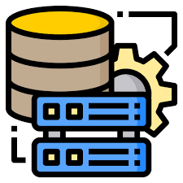

backend developer
My name is Santiago Bohorquez. I am a computer engineering student, 25 years old, and focused on the backend area. The purpose of this website is to present my projects and knowledge.
I have had the opportunity to carry out educational programming projects where, for their implementation, I have used programming languages such as Python, Java, and JavaScript for various purposes. These projects have been focused on frontend development, backend development, and data analysis


I have experience using databases to manage the projects I have undertaken. I have worked with both SQL and NoSQL languages, utilizing MariaDB or MySQL for relational databases, and MongoDB for non-relational databases
Within the realm of libraries, I have primarily used NumPy and Pandas, which are focused on the analysis and visualization of data, utilizing the Python structure for their functionality


I have knowledge of cloud computing and the services deployed therein, primarily using AWS as a foundation. I am proficient in managing containers using Docker to ensure the proper deployment and functioning of projects across multiple versions.
Throughout my academic and professional career, I have undertaken multiple projects using various tools within the Microsoft Office suite, including Excel, Word, PowerPoint, and Access. These tools have been instrumental in the successful completion of numerous projects and assignments